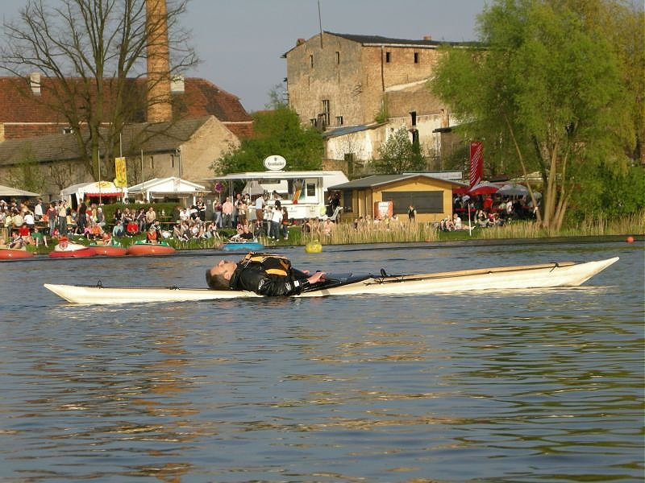

| Sonnet 16 by Thomas Ziegler (DE) | Menu Previous Page Next Page |
|

Thomas paddles his Sonnet 16 inflatable / folder / hybrid at the "Baumblütenfest" on the isle of Werder in Germany. Thomas reports .....
"It tracks really well and still turns so easy. It reacts nicely to edging but not too much and the effect is much more apparent compared to the Sea Ranger.... The Sonnet is quite fast." Thomas has provided links to both "Construction" and "Rolling" pics. Use the (BACK) key to return. |
|